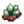
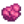
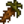
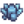
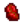
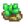
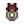
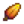
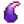

Dyeing
| Article Stub
This article is marked as a stub for the following reason:
|
Dyeing is the process of changing the color of clothing. Dyeing can be done in two ways, both of which are available at Emily's house: by using the dye pots and by using the sewing machine. Both are unlocked during a cutscene with Emily after obtaining at least 1 Cloth.
Dye Pots
The color and shade of clothing can be changed using the Dye Pots to the right of the sewing machine in Emily's house. The item(s) for dyeing must be worn to be dyed (each item is dyed separately at no extra cost).
To create a dye, interact with the pots and have an item in inventory representing each color dye pot (red, orange, yellow, green, blue, and purple). Inventory items have a color dot in the bottom left, corresponding with the color pot they belong in. Alternatively, hovering over each pot shows the available inventory items for that color.
Once each dye pot contains an item, a dye bottle lights up in the menu. Clicking the dye bottle button opens another menu with three separate Hue, Saturation, and Lightness (HSL) sliders (similar to those found in the character creation menu) allowing selection of color options for the item(s) of clothing being dyed. The digital sliders allow any color, including black, white, and gray to be created. Items used in the dye pots are consumed. Note that the quality star of the item(s) used has no effect on the process; the game treats all qualities as equal.
Accepted Dye Pot Items
Shown below are complete lists of all items that dye pots will accept. Items in boldface indicate items accepted in the dropbox for Mr. Qi's Prismatic Grange quest.
Sewing Machine

The sewing machine can also be used for a basic color change by placing the clothing item in the feed at the lower left of the sewing machine and the item to use as dye on the spool at the upper right. The item on the spool is consumed in the process. There is a preview of the changed item in the sewing machine menu.
Using a Prismatic Shard or Rainbow Shell to dye clothing will open a menu where any color can be chosen using slider buttons.
Dyeing using the sewing machine will result in a combination of the item's current color and the item used. For example, a dark green shirt dyed with a white item will become lighter green. A blue shirt dyed with a red item will become a shade of purple. A blue shirt dyed with a yellow item will become a shade of green, etc.
Note that the quality star of the item used on the spool has no effect on the process; the game treats all qualities as equal.
Dye Strength
Base dye strength is 25%, "Medium" dye strength is 50%, and "Strong" dye strength is 100%. To achieve full color saturation, it may be necessary to dye the clothing up to 4 times.
Shown below is a comparison of the effect of dye strength on a white shirt. Fire Quartz has a normal dye strength, Eggplant Parmesan has a medium dye strength, and Cranberries have a strong dye strength.
| Original | 25% | 50% | 75% | 100% |
|---|---|---|---|---|
|
|
Shown below is an expandable table of all items that can be used to dye clothing at the sewing machine, their colors, and dye strengths.
| Item | Color Name |
Color at full saturation (RGB) [1] |
Dye Strength | |
|---|---|---|---|---|
| Acorn | brown | 130,73,37 | ||
| Aerinite | cyan | 0,255,255 | ||
| Aged Roe (any) | orange | 255,128,0 | ||
|  | Alamite | gray | 128,128,128 | |
| Albacore | blue | 46,85,183 | ||
| Algae Soup | dark green | 0,100,0 | ||
| Amaranth | pale violet red | 219,112,147 | medium | |
| Amethyst | purple | 115,41,181 | ||
| Amphibian Fossil | white | 255,255,255 | ||
| Anchor | gray | 128,128,128 | strong | |
| Anchovy | blue | 46,85,183 | ||
| Ancient Doll | blue | 46,85,183 | strong | |
| Ancient Drum | purple | 115,41,181 | strong | |
| Ancient Fruit | cyan | 0,255,255 | ||
| Ancient Sword | gray | 128,128,128 | strong | |
| Angler | yellow | 255,230,0 | ||
| Apple | red | 220,0,0 | ||
| Apricot | orange | 255,128,0 | ||
| Aquamarine | aquamarine | 127,255,212 | ||
| Arrowhead | gray | 128,128,128 | strong | |
| Artichoke | green | 10,143,0 | medium | |
| Artichoke Dip | white | 255,255,255 | ||
| Autumn's Bounty | brown | 130,73,37 | ||
| Bait | pink | 255,163,186 | ||
| Baked Fish | yellow | 255,230,0 | ||
| Baryte | red | 220,0,0 | ||
| Basalt | gray | 128,128,128 | ||
| Basic Fertilizer | brown | 130,73,37 | ||
| Basic Retaining Soil | brown | 130,73,37 | ||
| Bat Wing | black | 45,45,45 | ||
| Battery Pack | cyan | 0,255,255 | ||
| Bean Hotpot | green | 10,143,0 | ||
| Beer | yellow | 255,230,0 | ||
| Beet | dark purple | 148,0,211 | strong | |
| Bixite | black | 45,45,45 | ||
| Blackberry | dark blue | 0,0,139 | ||
| Blackberry Cobbler | dark blue | 0,0,139 | ||
| Blobfish | sand | 255,222,173 | ||
| Blue Jazz | blue | 46,85,183 | medium | |
| Blue Slime Egg | blue | 46,85,183 | ||
| Blueberry | blue | 46,85,183 | strong | |
| Blueberry Tart | blue | 46,85,183 | ||
| Bok Choy | green | 10,143,0 | medium | |
| Bomb | black | 45,45,45 | ||
| Bone Flute | sand | 255,222,173 | strong | |
| Bouquet | pink | 255,163,186 | ||
| Bread | brown | 130,73,37 | ||
| Bream | blue | 46,85,183 | ||
| Broken CD | cyan | 0,255,255 | ||
| Broken Glasses | cyan | 0,255,255 | ||
| Bruschetta | red | 220,0,0 | ||
|  | Bug Meat | dark pink | 255,20,147 | |
| Bullhead | brown | 130,73,37 | ||
| Cactus Fruit | green | 10,143,0 | ||
| Calcite | yellow | 255,230,0 | ||
| Carp | yellow | 255,230,0 | ||
| Carp Surprise | brown | 130,73,37 | ||
| Catfish | gray | 128,128,128 | ||
| Cauliflower | white | 255,255,255 | medium | |
|  | Cave Carrot | brown | 130,73,37 | |
| Caviar | black | 45,45,45 | ||
| Celestine | iron | 197,213,224 | ||
| Chanterelle | brown | 130,73,37 | ||
| Cheese | yellow | 255,230,0 | ||
| Cheese Cauliflower | white | 255,255,255 | ||
| Cherry | red | 220,0,0 | ||
| Cherry Bomb | red | 220,0,0 | ||
| Chewing Stick | brown | 130,73,37 | strong | |
| Chicken Statue | sand | 255,222,173 | strong | |
| Chipped Amphora | brown | 130,73,37 | strong | |
| Chocolate Cake | brown | 130,73,37 | ||
| Chowder | white | 255,255,255 | ||
| Chub | gray | 128,128,128 | ||
| Clam | light cyan | 180,255,255 | ||
| Clay | brown | 130,73,37 | ||
| Cloth | white | 255,255,255 | ||
| Coal | black | 45,45,45 | ||
| Cockle | dark gray | 169,169,169 | ||
| Coconut | dark brown | 139,69,19 | ||
| Coffee | dark brown | 139,69,19 | ||
| Coffee Bean | brown | 130,73,37 | ||
| Coleslaw | green | 10,143,0 | ||
| Common Mushroom | dark brown | 139,69,19 | ||
| Complete Breakfast | yellow | 255,230,0 | ||
| Cookie | brown | 130,73,37 | ||
| Copper Bar | copper | 179,85,0 | ||
| Copper Ore | copper | 179,85,0 | ||
| Coral | red | 220,0,0 | ||
| Corn | yellow | 255,230,0 | medium | |
| Crab | red | 220,0,0 | ||
| Crab Cakes | brown | 130,73,37 | ||
| Crab Pot | brown | 130,73,37 | ||
| Cranberries | red | 220,0,0 | strong | |
| Cranberry Candy | red | 220,0,0 | strong | |
| Cranberry Sauce | red | 220,0,0 | strong | |
| Crayfish | dark gray | 169,169,169 | ||
| Crimsonfish | red | 220,0,0 | ||
| Crispy Bass | brown | 130,73,37 | ||
| Crocus | purple | 115,41,181 | medium | |
| Crystal Fruit | blue | 46,85,183 | ||
| Daffodil | yellow | 255,230,0 | ||
| Dandelion | yellow | 255,230,0 | ||
| Deluxe Speed-Gro | brown | 130,73,37 | ||
| Diamond | white | 255,255,255 | ||
| Dinosaur Egg | green | 10,143,0 | strong | |
| Dinosaur Mayonnaise | white | 255,255,255 | ||
| Dish O' The Sea | yellow | 255,230,0 | ||
| Dolomite | pink | 255,163,186 | ||
| Dorado | orange | 255,128,0 | ||
| Dried Starfish | yellow | 255,230,0 | strong | |
| Driftwood | brown | 130,73,37 | ||
| Duck Egg | white | 255,255,255 | ||
| Duck Feather | green | 10,143,0 | ||
| Duck Mayonnaise | white | 255,255,255 | ||
| Dwarf Gadget | gray | 128,128,128 | strong | |
| Dwarf Scroll I | red | 220,0,0 | strong | |
| Dwarf Scroll II | green | 10,143,0 | strong | |
| Dwarf Scroll III | blue | 46,85,183 | strong | |
| Dwarf Scroll IV | yellow | 255,230,0 | strong | |
| Dwarvish Helm | brown | 130,73,37 | strong | |
| Earth Crystal | copper | 179,85,0 | ||
| Eel | copper | 179,85,0 | ||
| Egg (white or brown) | white | 255,255,255 | ||
| Eggplant | purple | 115,41,181 | medium | |
| Eggplant Parmesan | red | 220,0,0 | medium | |
| Elvish Jewelry | yellow | 255,230,0 | strong | |
| Emerald | green | 10,143,0 | ||
| Energy Tonic | red | 220,0,0 | ||
| Escargot | gray | 128,128,128 | ||
| Esperite | green | 10,143,0 | ||
| Explosive Ammo | red | 220,0,0 | ||
| Fairy Rose | pink | 255,163,186 | medium | |
| Fairy Stone | purple | 115,41,181 | ||
| Farmer's Lunch | brown | 130,73,37 | ||
| Fiber | green | 10,143,0 | ||
| Fiddlehead Fern | green | 10,143,0 | strong | |
| Fiddlehead Risotto | green | 10,143,0 | ||
| Field Snack | brown | 130,73,37 | ||
| Fire Opal | dark purple | 148,0,211 | ||
| Fire Quartz | red | 220,0,0 | ||
| Fish Stew | gray | 128,128,128 | ||
| Fish Taco | yellow | 255,230,0 | ||
| Flounder | brown | 130,73,37 | ||
| Fluorapatite | purple | 115,41,181 | ||
| Fried Calamari | yellow | 255,230,0 | ||
| Fried Eel | yellow | 255,230,0 | ||
| Fried Egg | white | 255,255,255 | ||
| Fried Mushroom | brown | 130,73,37 | ||
| Frozen Geode | cyan | 0,255,255 | ||
| Frozen Tear | cyan | 0,255,255 | ||
| Fruit Salad | yellow | 255,230,0 | ||
| Garlic | white | 255,255,255 | medium | |
| Geminite | gray | 128,128,128 | ||
| Geode | brown | 130,73,37 | ||
|  | Ghost Crystal | gray | 128,128,128 | |
| Ghostfish | white | 255,255,255 | ||
| Glacierfish | blue | 46,85,183 | ||
| Glass Shards | cyan | 0,255,255 | strong | |
| Glazed Yams | brown | 130,73,37 | ||
| Goat Cheese | yellow | 255,230,0 | ||
| Goat Milk | white | 255,255,255 | ||
| Gold Bar | gold | 255,215,0 | ||
| Gold Ore | gold | 255,215,0 | ||
| Golden Mask | gold | 255,215,0 | strong | |
| Golden Pumpkin | gold | 255,215,0 | ||
| Golden Relic | gold | 255,215,0 | strong | |
| Granite | gray | 128,128,128 | ||
| Grape | purple | 115,41,181 | ||
| Green Algae | dark green | 0,100,0 | ||
| Green Bean | green | 10,143,0 | medium | |
| Green Slime Egg | green | 10,143,0 | ||
| Green Tea | green | 10,143,0 | ||
| Halibut | dark gray | 169,169,169 | ||
| Hardwood | brown | 130,73,37 | ||
| Hashbrowns | brown | 130,73,37 | ||
| Hay | yellow | 255,230,0 | ||
| Hazelnut | brown | 130,73,37 | ||
| Helvite | red | 220,0,0 | ||
| Hematite | copper | 179,85,0 | ||
| Herring | blue | 46,85,183 | ||
| Holly | red | 220,0,0 | ||
| Honey (any) | yellow | 255,230,0 | ||
| Hops | green | 10,143,0 | ||
| Hot Pepper | red | 220,0,0 | medium | |
| Ice Cream | white | 255,255,255 | ||
| Ice Pip | blue | 46,85,183 | ||
| Iridium Bar | iridium | 105,15,255 | ||
| Iridium Ore | iridium | 105,15,255 | ||
| Iron Bar | iron | 197,213,224 | ||
| Iron Ore | iron | 197,213,224 | ||
| Jack-O-Lantern | orange | 255,128,0 | ||
| Jade | jade | 130,158,93 | ||
| Jagoite | gold | 255,215,0 | ||
| Jamborite | lime | 0,255,0 | ||
|  | Jasper | red | 220,0,0 | |
| Jelly (any) | dark red | 139,0,0 | ||
| Joja Cola | blue | 46,85,183 | ||
| Juice (any) | green | 10,143,0 | ||
| Kale | green | 10,143,0 | strong | |
| Kyanite | dark blue | 0,0,139 | ||
| Large Goat Milk | white | 255,255,255 | ||
| Large Egg (white or brown) | white | 255,255,255 | ||
| Large Milk | white | 255,255,255 | ||
| Largemouth Bass | green | 10,143,0 | ||
| Lava Eel | red | 220,0,0 | ||
| Leek | white | 255,255,255 | ||
| Legend | green | 10,143,0 | ||
| Lemon Stone | orange | 255,128,0 | ||
| Life Elixir | dark pink | 255,20,147 | ||
| Limestone | gray | 128,128,128 | ||
| Lingcod | brown | 130,73,37 | ||
| Lobster | red | 220,0,0 | ||
| Lobster Bisque | white | 255,255,255 | ||
| Lucky Lunch | yellow | 255,230,0 | ||
| Lunarite | white | 255,255,255 | strong | |
| Magma Geode | red | 220,0,0 | ||
| Maki Roll | black | 45,45,45 | ||
| Malachite | green | 10,143,0 | ||
| Maple Bar | brown | 130,73,37 | ||
| Maple Seed | brown | 130,73,37 | ||
| Maple Syrup | brown | 130,73,37 | ||
| Marble | gray | 128,128,128 | ||
| Mayonnaise | white | 255,255,255 | ||
| Mead | gold | 255,215,0 | ||
| Mega Bomb | red | 220,0,0 | ||
| Melon | pink | 255,163,186 | medium | |
| Midnight Carp | iridium | 105,15,255 | ||
| Midnight Squid | blue | 46,85,183 | ||
| Milk | white | 255,255,255 | ||
| Miner's Treat | red | 220,0,0 | ||
| Morel | brown | 130,73,37 | ||
| Mudstone | brown | 130,73,37 | ||
| Muscle Remedy | dark yellow | 184,134,11 | ||
| Mussel | gray | 128,128,128 | ||
| Mutant Carp | green | 10,143,0 | ||
| Nautilus Fossil | white | 255,255,255 | ||
| Nautilus Shell | orange | 255,128,0 | ||
| Nekoite | pink | 255,163,186 | ||
| Neptunite | black | 45,45,45 | ||
| Oak Resin | green | 10,143,0 | ||
| Obsidian | black | 45,45,45 | ||
|  | Ocean Stone | green | 10,143,0 | |
| Octopus | orange | 255,128,0 | ||
| Oil | yellow | 255,230,0 | ||
| Oil of Garlic | yellow green | 173,255,47 | ||
| Omelet | white | 255,255,255 | ||
| Omni Geode | gray | 128,128,128 | ||
| Opal | light cyan | 180,255,255 | ||
| Orange | orange | 255,128,0 | ||
| Ornamental Fan | white | 255,255,255 | strong | |
| Orpiment | orange | 255,128,0 | ||
| Oyster | gray | 128,128,128 | ||
| Pale Ale | gold | 255,215,0 | ||
| Pale Broth | white | 255,255,255 | ||
| Palm Fossil | white | 255,255,255 | ||
| Pancakes | brown | 130,73,37 | ||
| Parsnip | yellow | 255,230,0 | medium | |
| Parsnip Soup | yellow | 255,230,0 | ||
| Peach | pink | 255,163,186 | ||
| Pearl | white | 255,255,255 | ||
| Pepper Poppers | brown | 130,73,37 | ||
| Perch | yellow | 255,230,0 | ||
| Periwinkle | cyan | 0,255,255 | ||
| Petrified Slime | green | 10,143,0 | ||
| Pickles (any) | green | 10,143,0 | ||
| Pike | yellow | 255,230,0 | ||
| Pine Cone | brown | 130,73,37 | ||
| Pine Tar | brown | 130,73,37 | ||
| Pink Cake | pink | 255,163,186 | ||
| Pizza | red | 220,0,0 | ||
| Plum Pudding | brown | 130,73,37 | ||
| Pomegranate | dark pink | 255,20,147 | ||
| Poppy | orange | 255,128,0 | medium | |
| Poppyseed Muffin | poppyseed | 82,47,153 | ||
| Potato | brown | 130,73,37 | medium | |
| Prehistoric Handaxe | gray | 128,128,128 | strong | |
| Prehistoric Rib | white | 255,255,255 | ||
| Prehistoric Scapula | white | 255,255,255 | ||
| Prehistoric Skull | white | 255,255,255 | ||
| Prehistoric Tibia | white | 255,255,255 | ||
| Prehistoric Tool | gray | 128,128,128 | strong | |
| Prehistoric Vertebra | white | 255,255,255 | ||
| Pufferfish | yellow | 255,230,0 | ||
| Pumpkin | orange | 255,128,0 | medium | |
| Pumpkin Pie | orange | 255,128,0 | ||
| Pumpkin Soup | orange | 255,128,0 | ||
| Purple Mushroom | purple | 115,41,181 | ||
| Purple Slime Egg | purple | 115,41,181 | ||
| Pyrite | gold | 255,215,0 | ||
| Quality Fertilizer | brown | 130,73,37 | ||
| Quality Retaining Soil | brown | 130,73,37 | ||
| Quartz | white | 255,255,255 | ||
| Rabbit's Foot | yellow | 255,230,0 | ||
| Radish | red | 220,0,0 | medium | |
| Radish Salad | red | 220,0,0 | ||
| Rain Totem | brown | 130,73,37 | ||
| Rainbow Trout | orange | 255,128,0 | ||
| Rare Disc | dark gray | 169,169,169 | strong | |
| Red Cabbage | purple | 115,41,181 | medium | |
| Red Mullet | red | 220,0,0 | ||
| Red Mushroom | red | 220,0,0 | ||
| Red Plate | red | 220,0,0 | ||
| Red Slime Egg | red | 220,0,0 | ||
| Red Snapper | red | 220,0,0 | ||
| Refined Quartz | iridium | 105,15,255 | ||
| Rhubarb | red | 220,0,0 | medium | |
| Rhubarb Pie | red | 220,0,0 | ||
| Rice | white | 255,255,255 | ||
| Rice Pudding | white | 255,255,255 | ||
| Roasted Hazelnuts | dark brown | 139,69,19 | ||
| Roe (any) | orange | 255,128,0 | ||
| Roots Platter | brown | 130,73,37 | ||
| Rotten Plant | copper | 179,85,0 | ||
| Ruby | red | 220,0,0 | ||
| Rusty Cog | brown | 130,73,37 | strong | |
| Rusty Spoon | gray | 128,128,128 | strong | |
| Rusty Spur | brown | 130,73,37 | strong | |
| Salad | green | 10,143,0 | ||
| Salmon | salmon | 255,85,95 | ||
| Salmon Dinner | pink | 255,163,186 | ||
| Salmonberry | red | 220,0,0 | ||
| Sandfish | yellow | 255,230,0 | ||
| Sandstone | sand | 255,222,173 | ||
| Sap | yellow | 255,230,0 | ||
| Sardine | blue | 46,85,183 | ||
| Sashimi | pink | 255,163,186 | ||
| Scorpion Carp | brown | 130,73,37 | ||
| Sea Cucumber | yellow | 255,230,0 | ||
| Sea Urchin | purple | 115,41,181 | ||
| Seafoam Pudding | blue | 46,85,183 | ||
| Seaweed | green | 10,143,0 | ||
| Shad | green | 10,143,0 | ||
| Shrimp | pink | 255,163,186 | ||
| Shrimp Cocktail | pink | 255,163,186 | ||
| Skeletal Hand | white | 255,255,255 | ||
| Skeletal Tail | white | 255,255,255 | ||
| Slate | gray | 128,128,128 | ||
| Slime | gray | 128,128,128 | ||
| Slimejack | green | 10,143,0 | ||
| Smallmouth Bass | brown | 130,73,37 | ||
| Snail | yellow | 255,230,0 | ||
| Snow Yam | white | 255,255,255 | ||
| Soapstone | white | 255,255,255 | ||
| Soggy Newspaper | gray | 128,128,128 | ||
| Solar Essence | yellow | 255,230,0 | ||
| Spaghetti | red | 220,0,0 | medium | |
| Speed-Gro | brown | 130,73,37 | ||
| Spice Berry | orange | 255,128,0 | ||
| Spicy Eel | red | 220,0,0 | ||
| Spook Fish | blue | 46,85,183 | ||
| Spring Onion | white | 255,255,255 | ||
| Squid | white | 255,255,255 | ||
| Squid Ink | black | 45,45,45 | ||
| Star Shards | pink | 255,163,186 | ||
| Starfruit | yellow | 255,230,0 | ||
| Stir Fry | brown | 130,73,37 | ||
| Stone | gray | 128,128,128 | ||
| Stonefish | brown | 130,73,37 | ||
| Strange Bun | pink | 255,163,186 | ||
| Strange Doll (green) | green | 10,143,0 | strong | |
| Strange Doll (yellow) | yellow | 255,230,0 | strong | |
| Strawberry | red | 220,0,0 | medium | |
| Stuffing | brown | 130,73,37 | ||
| Sturgeon | cyan | 0,255,255 | ||
| Sugar | white | 255,255,255 | ||
| Summer Spangle | yellow | 255,230,0 | medium | |
| Sunfish | orange | 255,128,0 | ||
| Sunflower | yellow | 255,230,0 | medium | |
| Super Cucumber | purple | 115,41,181 | ||
| Super Meal | green | 10,143,0 | ||
| Survival Burger | brown | 130,73,37 | ||
| Sweet Gem Berry | red | 220,0,0 | ||
| Sweet Pea | purple | 115,41,181 | medium | |
| Tea Leaves | green | 10,143,0 | ||
| Thunder Egg | dark purple | 148,0,211 | ||
| Tiger Trout | brown | 130,73,37 | ||
| Tigerseye | orange | 255,128,0 | ||
| Tilapia | gray | 128,128,128 | ||
| Tom Kha Soup | white | 255,255,255 | ||
| Tomato | red | 220,0,0 | medium | |
| Topaz | gold | 255,215,0 | ||
| Torch | yellow | 255,230,0 | ||
| Tortilla | brown | 130,73,37 | ||
| Trash | black | 45,45,45 | ||
| Treasure Chest | yellow | 255,230,0 | ||
| Tree Fertilizer | brown | 130,73,37 | ||
| Trilobite | white | 255,255,255 | ||
| Triple Shot Espresso | dark brown | 139,69,19 | strong | |
| Trout Soup | brown | 130,73,37 | ||
| Truffle | brown | 130,73,37 | ||
| Truffle Oil | yellow | 255,230,0 | ||
| Tulip | red | 220,0,0 | medium | |
| Tuna | blue | 46,85,183 | ||
| Unmilled Rice | brown | 130,73,37 | ||
| Vegetable Medley | green | 10,143,0 | ||
| Vinegar | white | 255,255,255 | ||
| Void Egg | black | 45,45,45 | ||
| Void Essence | purple | 115,41,181 | ||
| Void Mayonnaise | red | 220,0,0 | ||
| Void Salmon | dark purple | 148,0,211 | ||
| Walleye | yellow | 255,230,0 | ||
| Warp Totem: Beach | brown | 130,73,37 | ||
| Warp Totem: Desert | brown | 130,73,37 | ||
| Warp Totem: Farm | brown | 130,73,37 | ||
| Warp Totem: Mountains | brown | 130,73,37 | ||
| Wheat | yellow | 255,230,0 | ||
| Wheat Flour | white | 255,255,255 | ||
| White Algae | white | 255,255,255 | ||
| Wild Horseradish | brown | 130,73,37 | ||
| Wild Plum | dark purple | 148,0,211 | ||
| Wine (any) | dark purple | 148,0,211 | ||
| Winter Root | orange | 255,128,0 | ||
| Wood | brown | 130,73,37 | ||
| Woodskip | orange | 255,128,0 | ||
| Wool | white | 255,255,255 | ||
| Yam | brown | 130,73,37 | medium | |
| Amethyst Ring | purple | 115,41,181 | ||
| Aquamarine Ring | cyan | 0,255,255 | ||
| Sturdy Ring | cyan | 0,255,255 | ||
| Burglar's Ring | jade | 130,158,93 | ||
| Jade Ring | jade | 130,158,93 | ||
| Emerald Ring | green | 10,143,0 | ||
| Slime Charmer Ring | green | 10,143,0 | ||
| Glow Ring | yellow | 255,230,0 | ||
| Small Glow Ring | yellow | 255,230,0 | ||
| Iridium Band | iridium | 105,15,255 | ||
| Wedding Ring | iridium | 105,15,255 | ||
| Jukebox Ring | black | 45,45,45 | ||
|  | Magnet Ring | gray | 128,128,128 | |
| Small Magnet Ring | gray | 128,128,128 | ||
| Ring of Yoba | gold | 255,215,0 | ||
| Ruby Ring | red | 220,0,0 | ||
| Vampire Ring | red | 220,0,0 | ||
| Savage Ring | sand | 255,222,173 | ||
| Warrior Ring | sand | 255,222,173 | ||
| Topaz Ring | orange | 255,128,0 | ||
| Glacierfish Jr. | blue | 46,85,183 | ||
| Qi Bean | blue | 46,85,183 | ||
| Qi Fruit | blue | 46,85,183 | ||
| Crabshell Ring | brown | 130,73,37 | ||
|  | Mahogany Seed | brown | 130,73,37 | |
| Stingray | brown | 130,73,37 | ||
| Taro Root | brown | 130,73,37 | ||
| Warp Totem: Island | brown | 130,73,37 | ||
| Blue Discus | cyan | 0,255,255 | ||
| Glowstone Ring | gold | 255,215,0 | ||
| Phoenix Ring | gold | 255,215,0 | ||
| Lucky Ring | gold | 255,215,0 | ||
| Protection Ring | gray | 128,128,128 | ||
| Ginger Ale | green | 10,143,0 | ||
| Legend II | green | 10,143,0 | ||
| Radioactive Carp | green | 10,143,0 | ||
| Immunity Band | iridium | 105,15,255 | ||
| Radioactive Bar | lime | 0,255,0 | ||
| Radioactive Ore | lime | 0,255,0 | ||
| Cinder Shard | orange | 255,128,0 | ||
|  | Dragon Tooth | orange | 255,128,0 | |
| Lionfish | orange | 255,128,0 | ||
| Magma Cap | orange | 255,128,0 | ||
| Napalm Ring | orange | 255,128,0 | ||
| Tiger Slime Egg | orange | 255,128,0 | ||
| Tropical Curry | orange | 255,128,0 | ||
| Bug Steak | pink | 255,163,186 | ||
| Ms. Angler | pink | 255,163,186 | ||
| Poi | pink | 255,163,186 | ||
| Monster Musk | purple | 115,41,181 | ||
| Mushroom Tree Seed | red | 220,0,0 | ||
| Son of Crimsonfish | red | 220,0,0 | ||
| Bone Fragment | sand | 255,222,173 | ||
| Fossilized Leg | sand | 255,222,173 | ||
| Fossilized Ribs | sand | 255,222,173 | ||
| Fossilized Skull | sand | 255,222,173 | ||
| Fossilized Spine | sand | 255,222,173 | ||
| Fossilized Tail | sand | 255,222,173 | ||
| Hot Java Ring | sand | 255,222,173 | ||
| Mummified Bat | sand | 255,222,173 | ||
| Mummified Frog | sand | 255,222,173 | ||
| Snake Skull | sand | 255,222,173 | ||
| Snake Vertebrae | sand | 255,222,173 | ||
| Thorns Ring | sand | 255,222,173 | ||
| Ostrich Egg | white | 255,255,255 | ||
| Piña Colada | white | 255,255,255 | ||
| Banana | yellow | 255,230,0 | ||
| Banana Pudding | yellow | 255,230,0 | ||
| Ginger | yellow | 255,230,0 | ||
| Golden Coconut | yellow | 255,230,0 | ||
| Mango Sticky Rice | yellow | 255,230,0 | ||
| Pineapple | yellow | 255,230,0 | ||
| Mango | yellow | 255,230,0 | ||
| Soul Sapper Ring | yellow green | 173,255,47 | ||
| Moss | green | 10,143,0 | ||
| Mystery Box | dark cyan | 0,139,139 | ||
| Mystic Syrup | cyan | 0,255,255 | ||
| Raisins | purple | 115,41,181 | ||
| Sonar Bobber | gray | 128,128,128 | ||
| Tent Kit | brown | 130,73,37 | ||
References
History
- 1.4: Introduced.
- 1.5: Added rings to items available to use in dye pots and the sewing machine. Coral changed from pale violet red to red.
- 1.6: Added new items that can be used for dyeing and for Mr. Qi's Prismatic Grange quest.